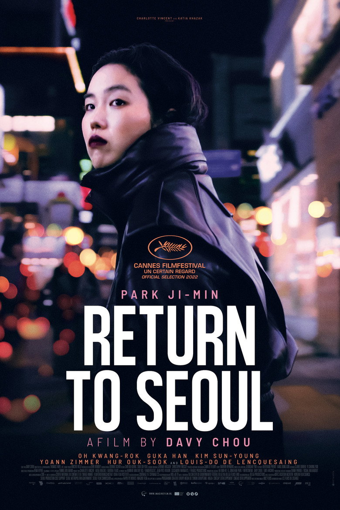

Fiche technique

Synopsis
Freddie, 25 ans, née en Corée et adoptée bébé par un couple français, atterrit à Séoul sur un coup de tête — un vol pour Tokyo annulé, dira-t-elle. Elle ne parle pas un mot de coréen, ne connaît rien du pays, et jure qu'elle n'est pas venue chercher ses parents biologiques. Deux semaines plus tard, elle pousse pourtant la porte du centre Hammond, l'organisme d'adoption qui détient son dossier[1].
Le père biologique répond aux télégrammes — pêcheur repenti, encombrant de culpabilité et de soju ; la mère, elle, ne répond pas. Sur huit ans et plusieurs vies successives — fêtarde à Séoul, vendeuse d'armes en tailleur, silhouette égarée en province — le film suit Freddie qui revient, repart, se réinvente, et refuse obstinément que quiconque (père, amants, pays, spectateur) décide à sa place de qui elle est[1][2].
Contexte de production
Troisième long métrage de Davy Chou, cinéaste français né de parents cambodgiens, qui connaît intimement le vertige du « retour » au pays d'origine : il a découvert le Cambodge à l'âge adulte, expérience qui nourrissait déjà Diamond Island. Le point de départ est ici l'histoire vraie de son amie Laure Badufle, adoptée d'origine coréenne, dont il avait accompagné l'une des retrouvailles[1][2].
Pour Freddie, Chou choisit une non-professionnelle : Park Ji-min, plasticienne née à Séoul et arrivée en France enfant, recommandée par une amie — elle a contribué à façonner le personnage, jusqu'à en discuter pied à pied certaines scènes[2]. Coproduction à cinq pays menée par la France, le film est présenté à Un Certain Regard le 22 mai 2022, sort en France en janvier 2023 — et, ironie géopolitique savoureuse pour un film sur l'identité introuvable : c'est le Cambodge qui le présente à l'Oscar du film international 2023, où il atteint la présélection[1].
Structure narrative
Le film couvre huit ans en quatre blocs séparés par des ellipses franches — deux semaines, puis deux ans, puis cinq, puis un épilogue — et chaque retour à Séoul retrouve une Freddie méconnaissable : coiffure, vêtements, entourage, métier, jusqu'à la bande-son de sa vie. La critique a souligné ce refus du « scénario attendu du film de recherche des origines » : le récit « suit sa propre trajectoire, s'autorise des ellipses, fait apparaître et disparaître des personnages » — comme la vie, pas comme un dossier[2].
Ce montage par mues successives est la thèse du film : là où le mélodrame d'adoption promet la scène des retrouvailles comme résolution, Chou la place au premier tiers — et elle ne résout rien. Les vraies scansions sont ailleurs : un télégramme sans réponse, une danse seule au milieu d'un bar, un morceau de piano au casque dans le dernier plan. Le film progresse non vers une origine retrouvée mais vers un apaisement sans certificat[2][3].
Mise en scène et procédés techniques
La caméra de Thomas Favel filme Séoul en ville-écran — néons, bars enfumés, autoroutes nocturnes — mais toujours à hauteur de Freddie : c'est un Séoul d'étrangère, sans pittoresque touristique, où la langue elle-même est un mur que la mise en scène matérialise par le jeu constant de la traduction (l'amie Tena traduit, édulcore, tamponne les brutalités des uns et des autres — la traduction comme personnage)[2].
Chou dilate les durées — « des plans souvent étirés à l'extrême » — et ménage « quelques parenthèses presque oniriques, où l'on s'exprime avec le corps plus qu'avec la voix »[3] : les scènes de danse, d'abord, où Freddie, seule contre la piste, transforme le malaise en défi — chorégraphies de l'insoumission qui disent son personnage mieux qu'aucun dialogue. La musique fait le reste : compositions de Jérémie Arcache et Christophe Musset, rock coréen des années 60 (Shin Jung-hyeon), et ce piano final que Freddie déchiffre seule — l'identité non comme héritage reçu mais comme partition qu'on apprend[1].
Personnages principaux
Freddie (Park Ji-min, débuts sidérants unanimement salués[2]) est l'anti-héroïne que le sujet interdisait presque : « antipathique et souvent insolente »[3], imprévisible, cruelle parfois avec ceux qui l'aiment — et c'est précisément ce refus d'être aimable qui fait d'elle un grand personnage. Elle oppose à toutes les assignations (fille perdue de la Corée, enfant reconnaissante de la France, fiancée possible, victime à consoler) une seule réponse : « je peux te rayer de ma vie d'un claquement de doigts ». Sa dureté est une politique d'indépendance[3].
Le père biologique (Oh Kwang-rok) est son contrepoids déchirant : noyé de remords et de soju, il réclame trop, trop tard, une paternité qu'il n'a pas exercée — leurs scènes, où la culpabilité s'exprime en messages nocturnes et silences traduits, sont parmi les plus justes jamais filmées sur les retrouvailles d'adoption. Tena (Guka Han), l'amie-interprète, incarne la douceur coréenne que Freddie tient à distance, et la mère biologique, présence en creux, gouverne le film entier depuis son silence[1][2].
Thèmes
L'identité comme construction, non comme héritage : c'est le renversement central. Le film démonte le mythe du « retour aux sources » — Freddie ne retrouve pas une identité coréenne enfouie, elle constate qu'il n'y en a pas, et qu'il va falloir s'inventer avec ce manque. D'où le titre international, All the People I'll Never Be : tous ces « moi » possibles — la Coréenne qu'elle aurait été, la Française apaisée qu'on attend d'elle — que le film égrène pour mieux les congédier[2].
L'abandon ensuite, « dans tous les sens du terme »[2] : celui, originel, de l'adoption, mais aussi ceux que Freddie inflige à son tour — amants congédiés, amies rayées, pères éconduits — comme si la blessure ne savait se dire qu'en se reproduisant. Et puis la langue : le coréen qu'elle refuse d'apprendre, le français qui la désigne comme étrangère à Séoul, l'anglais des demi-vérités — le film pense la langue maternelle comme la seule patrie qu'on ne peut pas rapatrier. Chou évite partout « le style démonstratif inhérent aux films à thèse »[2] : pas de leçon sur l'adoption internationale, mais son sismographe le plus fin.
Réception critique et postérité
Révélation d'Un Certain Regard 2022, le film récolte des critiques remarquables — 88 sur Metacritic, 3,7/5 de moyenne presse sur AlloCiné[1] — et la presse française salue unanimement l'interprétation de Park Ji-min, « éblouissante performance » d'une non-professionnelle[2], ainsi que la dureté assumée du geste :
« Le film ne cherche surtout pas à faire preuve de complaisance — Davy Chou fait le choix délibéré de ne pas nous prendre par la main. » À la rencontre du septième art[3]
Succès d'estime plus que de foule (environ 112 000 entrées françaises, 2,1 M$ dans le monde[1]), le film s'est imposé comme une référence immédiate du récit d'adoption au cinéma — cité depuis dans toute discussion du sujet aux côtés d'un documentaire comme Une histoire à soi, et comme la preuve qu'un premier rôle peut naître à l'écran tout armé : la carrière de Park Ji-min était lancée d'un seul film.
Conclusion
Retour à Séoul réussit ce que presque tous les films d'adoption manquent : ne pas confondre l'origine et l'identité. En plaçant les retrouvailles au premier tiers et en refusant à son héroïne toute épiphanie, Davy Chou déplace la question — non pas « d'où viens-je ? » mais « que faire de ce qui ne répond pas ? ». Le dossier Hammond reste ouvert à la dernière image ; c'est Freddie qui, elle, cesse d'en être une pièce.
Il fallait pour cela un personnage assez libre pour être ingrat, une actrice assez neuve pour être imprévisible, et un cinéaste assez proche du sujet pour n'en rien simplifier. Le dernier plan — Freddie seule au piano, déchiffrant une partition qu'on lui a donnée mais qu'elle joue à sa manière — est la plus belle définition récente de l'identité au cinéma : ni retrouvée, ni reçue. Apprise.
Sources
- Wikipédia (fr) — « Retour à Séoul » : fiche technique (Favel, Sichov, musique Arcache/Musset), coproduction, inspiration Laure Badufle, dates (Cannes 22 mai 2022, sortie janvier 2023), sélection cambodgienne aux Oscars 2023, réception chiffrée. fr.wikipedia.org/wiki/Retour_à_Séoul
- Presse française consultée via recherche web (avoir-alire, Mondociné, Bande à part, C'est quoi le cinéma) : genèse (amie du cinéaste, parcours personnel de Davy Chou), Park Ji-min et sa contribution au rôle, structure par ellipses, thème de l'abandon, refus du film à thèse. avoir-alire.com
- À la rencontre du septième art — « Retour à Séoul (Davy Chou, 2023) - Critique et Analyse » : durées étirées, parenthèses oniriques et corporelles, dureté du personnage, absence de complaisance. alarencontreduseptiemeart.com
- The Movie Database (TMDB) — fiche du film (données factuelles, affiche). themoviedb.org/movie/952701